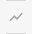

Draw Toolbar
The Draw Toolbar allows you to interact directly with the map. Functionally, it gives you the ability to create new geometries by drawing them on the map. The Drawing toolbar contains a collection of icon buttons that allows the user to draw shapes and images in the document.
Feature Highlight
Some of the features that the Draw Toolbar provides:
- Draw Points / Lines / Polygons
- Edit / Erase created objects
- Save / Upload Drawing
- Includes distance to your lines, perimeter and area to your polygons.
| Button | Name | Function |
|---|---|---|
 |
Color Picker | Allows you to select different colors |
 |
New Marker | Draws a marker point |
|  | New Line | Draws a line and includes the distance of the line |
 |
New Polygon | Draws a polygon and includes the area and perimeter of the shape |
| Edit Vertices | Allows you to edit the vertices of the selected line, polygon, or curve | |
| Erase | Erase selected features | |
 |
Save | Saves graphics to file |
| Upload | Uploads saved graphic file to the map |